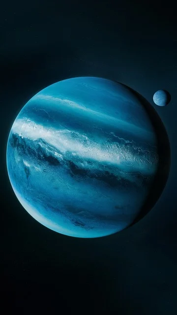
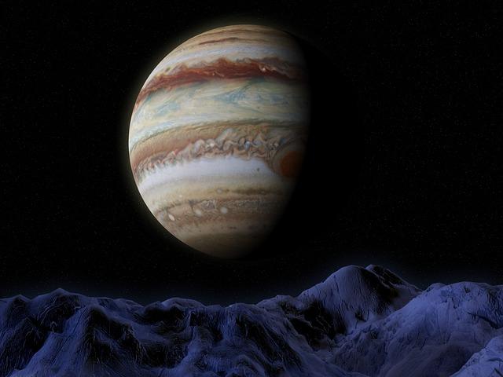
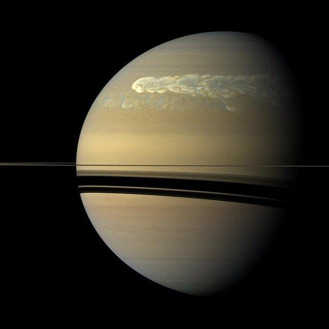
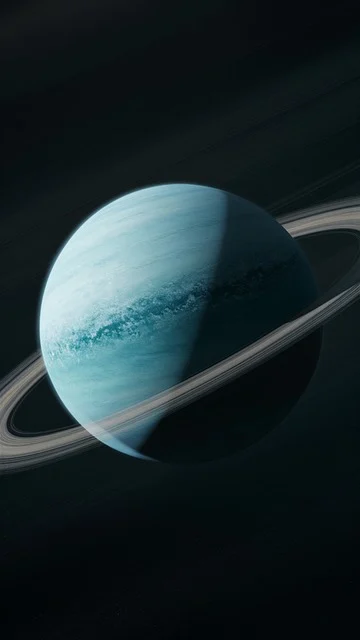

Mercury
- Distance from the Sun : About 57.9 million kilometers.
- Rotation Period (Day): 59 Earth days..
- Orbit Period (Year): 88 Earth days
- Information: Neptune is the farthest planet from the Sun in our Solar System, known
for its deep blue color due to the presence of methane in its atmosphere. It has strong winds and
storms, and is a gas giant.

Neptune
- Distance from the Sun: About 4.5 billion kilometers.
- Rotation Period (Day): About 16.1 hours.
- Orbit Period (Year): 165 Earth years.
- Information: Neptune, the farthest planet from the Sun, has a deep blue color due
to methane in its atmosphere and is known for its intense winds and storms.

Earth
- Distance from the Sun : About 149.6 million kilometers.
- Rotation Period (Day): 24 hours.
- Orbit Period (Year): 365.25 days.
- Information: Earth is the only known planet to support life, with liquid water and
a balanced atmosphere composed mainly of oxygen and nitrogen.

Mars
- Distance from the Sun : About 227.9 million kilometers.
- Rotation Period (Day): Approximately 24.6 hours.
- Orbit Period (Year): 687 Earth days.
- Information: Known as the Red Planet due to its iron-rich surface, Mars has the
tallest volcano in the Solar System, Olympus Mons, and is a key focus for space exploration..

Jupiter
- Distance from the Sun : About 778.3 million kilometers.
- Rotation Period (Day): About 10 hours.
- Orbit Period (Year): 12 Earth years
- Information: : Jupiter is the largest planet in the Solar System, a gas giant
primarily made of hydrogen and helium. It is famous for the Great Red Spot, a massive storm.

Saturn
- Distance from the Sun : About 1.43 billion kilometers.
- Rotation Period (Day):Approximately 10.7 hours.
- Orbit Period (Year): 29.5 Earth years.
- Information: Saturn is well-known for its beautiful rings made of ice and rock. It
is the second-largest planet and, like Jupiter, is a gas giant mostly composed of hydrogen.

Uranus
- Distance from the Sun : About 2.87 billion kilometers.
- Rotation Period (Day):Around 17.2 hours.
- Orbit Period (Year): 84 Earth years.
- Information: Uranus has a unique sideways rotation, and its atmosphere contains
hydrogen, helium, and methane, giving it a blue hue.